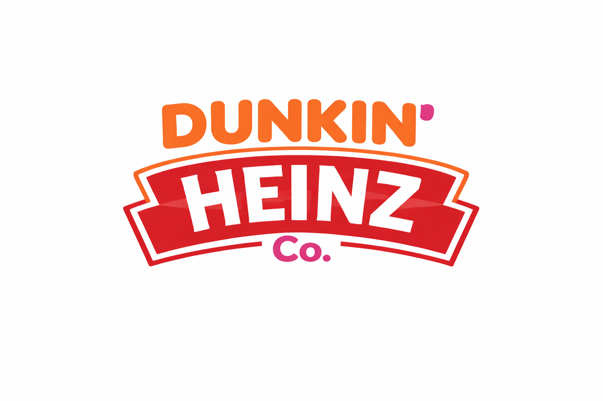
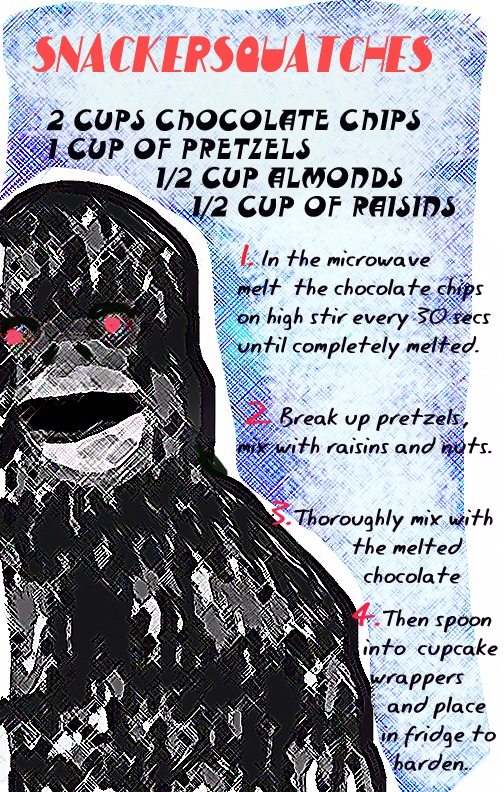
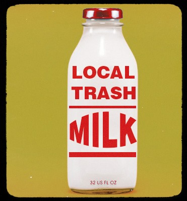
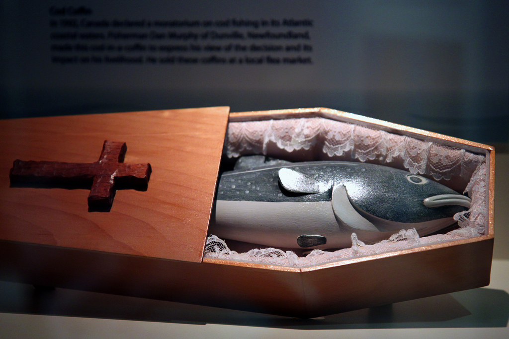
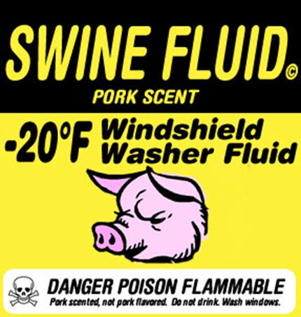
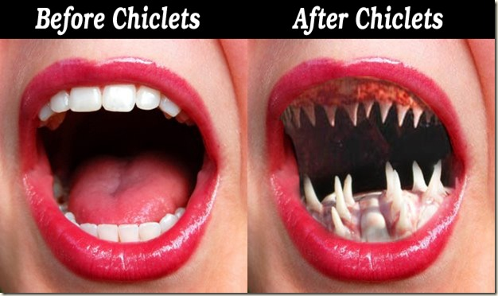
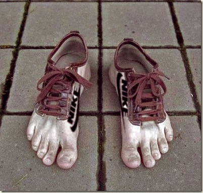

Leaked Memo: Dunkin Heinz Duncan Hines Co. – The Name So Bold, You’ll Never Forget It
Dunkin Heinz Co. – Project Hines Corporate Planning (TOP SECRET) Date: March 10, 2026 Subject: Hypothetical Acquisition of Duncan Hines…
Dunkin Heinz Co. – Project Hines Corporate Planning (TOP SECRET) Date: March 10, 2026 Subject: Hypothetical Acquisition of Duncan Hines…

FOR IMMEDIATE RELEASE Dunkin’ Brands and The Kraft Heinz Company Announce Strategic Merger to Form Dunkin’ Heinz Co. Newly combined…
Livewood, East Dakota., Feb. 5, 2026 /PRNewswire/ -- Wake up, America. Breakfast just got LOUDER. EMToast Consumer Brands today announced HUNCH…

Originally posted here on October 24, 2025 https://emtoast.blogspot.com/2025/10/godzilla-x-sailor-moon-fan-zone.html I was trying to get chatGPT to create the html site for…
Are you looking to spice up your bean soup recipe? Look no further than the French tradition of adding olives!…
Are you tired of the same old house pets? Tired of feeding and taking care of your dog or cat?…

Racter was a pioneering AI program that was developed in the 1980s for use on the Amiga 500 computer. It…


Trash milk is the most popular non-dairy milk in the United States. It is rich in several healthy nutrients, but…

Oliver, the human-chipmanzee hybrid who died in 2012 was more intelligent than was previously thought. A recent memoir was purportedly…

Right now we're all thirsty for something cleaner. Right now artificial feels so right. Right now we're gonna make it…

Robo-Coffin is the new product from Local Area Industries that eliminates the worry and stress about dying alone. No longer…
This is the first installment of my secret family recipe book. More to come in the future. Enjoy Snackersquatches and…

Port Coquitlam, British Columbia. (PressRelease) November 7, 2009 – Willie Pickton Industries, Inc.®, a major supplier and worldwide exporter of…
Date 9/11/09 Round Rock, TX No noisy fans, dusty screen, or hot computer on your lap. The Dell Notebook is…
The luxurious life of the privileged is at your fingertips and toetips in just 8 short weeks. The revolutionary new…

Chiclets, the candy coated gum once widely available in the US is set to make a comeback after many years…
Thin droopy eyebrows got you down? Poorly defined bushy brows? All that’s in the past. It’s 2009 now, a new…

BEAVERTON, Ore. (Dec. 21, 2008) – NIKE, Inc. (NYSE: NKE) today announced that they are expecting profits in the 1st…

With building security tightening nationwide, gun enthusiasts and criminals alike have found a novel way around pat downs and metal…